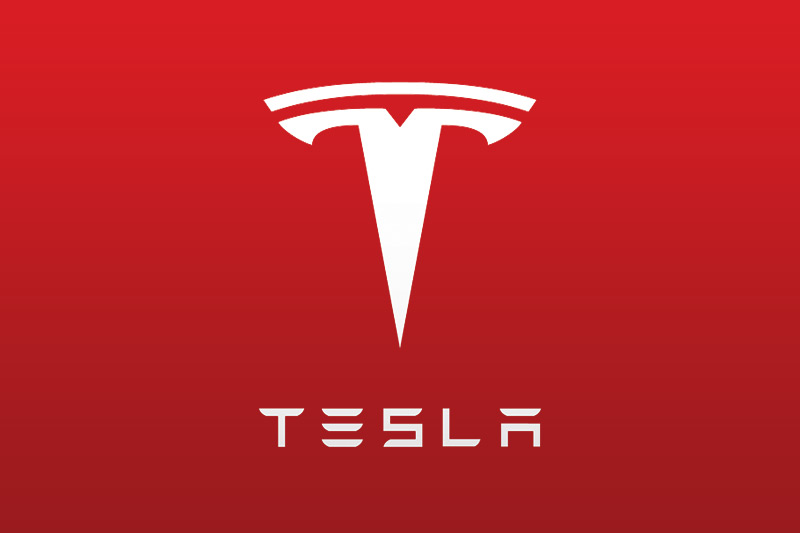
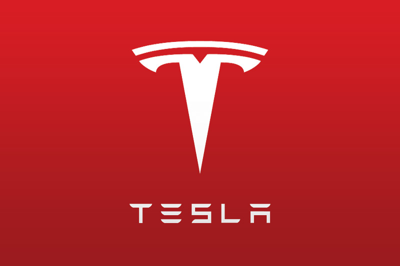
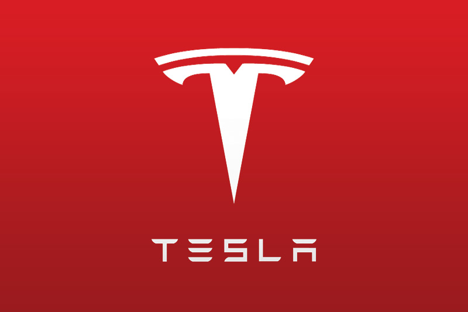

Créateur de Zip2, Paypal, Space X, HyperLoop et OpenAI. Il est le CEO de Space X et Tesla Motors.
Biographie
Activités
Ambitions
Réalisations

Activités
1995: Création de Zip2 Corporation,logiciel de publication de contenu en ligne pour les informations des entreprises.
1999: Cofondation de X.com, une banque en ligne qui devient Paypal par la suite.
2002: Elon Musk fonde sa troisième société, Space X, une entreprise qui développer et produit des véhicules de lancement spatiaux
2004: Il rentre dans le cpaital de Tesla Motors, puis en prend le contrôle en 2008. Tesla Motors a pour objectif de fare des vehicules éléctriques accessibles.
2012: Présentation du projet Hyperloop, un TGV solaire subsonique capable de se déplacer à 1200Km/h comportant des passagers dans des capsules
2015: presentation d'OpenAI, un centre à but non lucratif basé sur l'intelligence artificielle qui regroupe une dizaine de star-up dans ce domaine.

 
